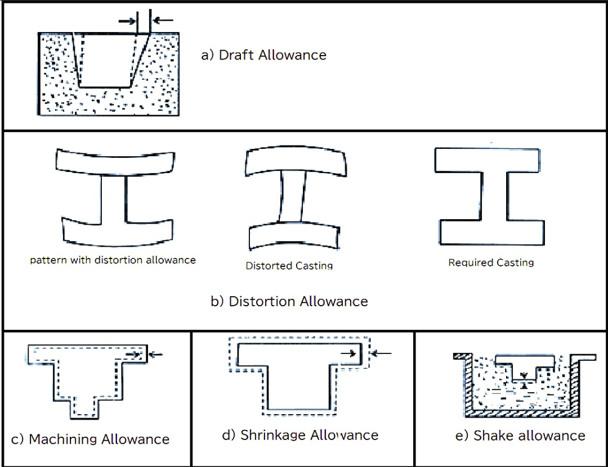
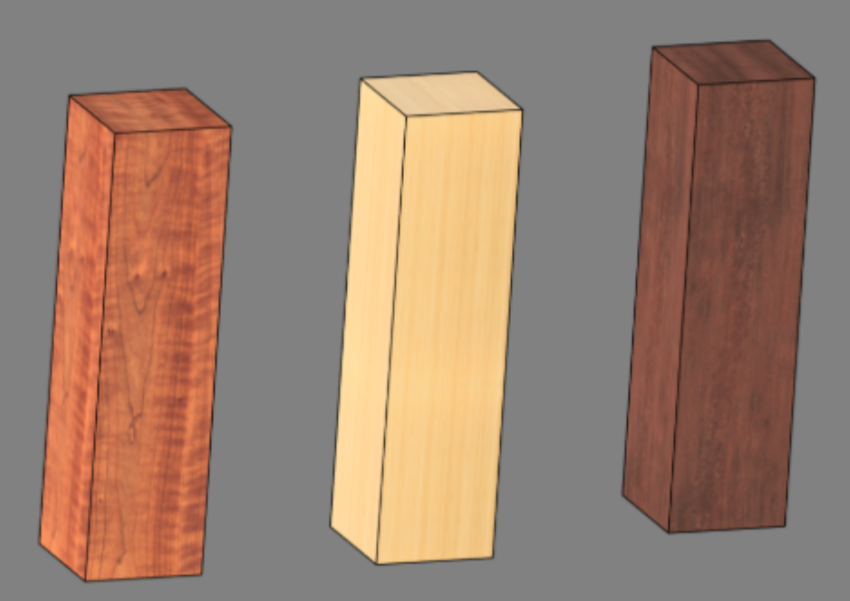
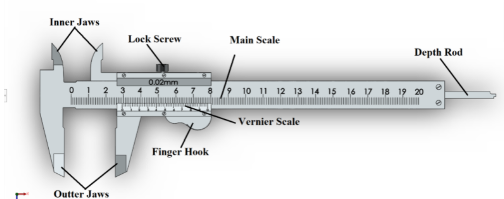
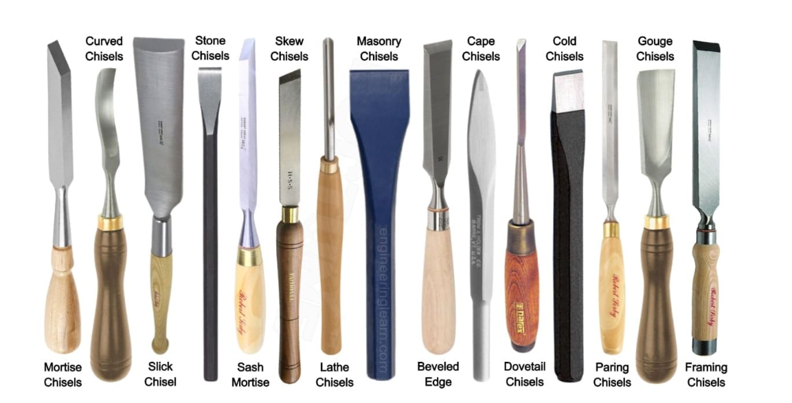

Theory
A pattern is a model of casting that is used to prepare the mold cavity. This is slightly larger than the final casting because various allowances are added to metal behavior and manufacturing conditions such as shrinkage, machining, drafts, and deformation. The accuracy of the pattern directly affects the quality of the final casting. It controls the shape and size of the final product and facilitates the formation of the mold cavity, playing an important role in obtaining defect-free casting.
A variety of patterns are used in casting based on the size and complexity of the component. A Single Piece Pattern is the simplest type, built in one piece and used for flat or straight shapes. A Split Pattern is divided into two parts with a visible line and is used for complex geometries. In a Match Plate Pattern, high accuracy and repeatability are offered by mounting both halves of the pattern on opposite edges of a match plate, which is often used in large-scale production. A Loose Piece Pattern contains detachable parts to deal with internal or external undercuts that cannot be removed directly. The Sweep Pattern is made by rotating a 2D profile around an axis and is suitable for large, symmetric castings.
In making patterns, allowances are important. The Shrinkage Allowance compensates for metal contraction during solidification. It is calculated using the formula:
Where As is the shrinkage allowance (in mm), L is the original casting dimension, and S is the shrinkage rate in percentage.
Different metals have different shrinkage allowances. For example:
| Material | Shrinkage Allowance (mm/mm) |
|---|---|
| Aluminium | 0.013 |
| Brass | 0.0155 |
| Bronze | 0.0155 to 0.022 |
| Cast Iron | 0.0104 |
| Steel | 0.0208 |
| Copper | 0.016 |
| Gunmetal | 0.010 to 0.016 |
| Lead | 0.026 |
| Magnesium | 0.013 |
Example: For a 200 mm long casting and shrinkage rate of 1.5%, the shrinkage allowance would be: As = 200 * (1.5/100) = 3 mm So, the pattern length should be 203 mm
The draft allowance is the taper provided on the vertical faces of the pattern to allow easy removal from the mould. It is calculated as:
Draft Height =
Where H is the height and theta θ is the draft angle. For example, for H = 50 mm and theta = 2 degree, the draft height will be approximately 1.75 mm.
Draft angles vary with pattern materials:
| Pattern Material | Outer Draft (°) | Inner Draft (°) |
|---|---|---|
| Wood | 0.25 to 3.00 | 0.50 to 3.00 |
| Metal | 0.35 to 1.50 | 0.50 to 3.00 |
| Plastic | 0.25 to 1.00 | 0.35 to 2.25 |
The Machining Allowance is added to allow extra material for post-casting machining operations. This is typically between 1-5 mm depending on the size and complexity.
Example: For a 100 mm casting with 2 mm machining allowance:
Pattern Length = 100 + 2 = 102 mm.
The Shake Allowance is a negative allowance to compensate for slight enlargement of the mould cavity caused by pattern rapping or shaking during withdrawal. This typically ranges from −0.2 to −0.5 mm.
The Distortion Allowance compensates for warping or bending in castings, especially those with long, thin sections or asymmetrical geometry. This value is determined by experience or experimental results.

Common materials used for patterns include:
- Wood: Lightweight, easy to shape, and ideal for prototypes or educational purposes.
- Aluminium: Durable and dimensionally accurate, suitable for mass production.
- Plastic: Offers a smooth surface finish and is useful in low-volume production.
- Wax: Used in investment casting; melts away during moulding, enabling highly precise components
The method of making patterns also depends on their complexity:
- Simple Patterns: such as blocks can be made using hand tools like saws, chisels, and files.
- Round Patterns:are best produced on a lathe machine for accuracy.
- Complex Patterns: require advanced tools like CNC routers, manual shaping, or jigs and match plates to maintain precision.
Understanding and correctly applying these principles significantly improves the efficiency, dimensional accuracy, and surface quality of the final casting.
Apparatus
- Wood piece
- Marking Tool - Scriber
- Straight Scriber –for marking straight layout lines.
- Bent-tip Scriber –for marking in hard-to-reach spots.
- Hook Scriber / L-shaped Scriber – for marking around edges or inside holes.
- Awl-type Scriber –for piercing and marking.
- Curved Hook Scriber – for internal markings.
- Right-angle Scriber –for marking perpendicular lines or tight corners.
- Vernier Calliper
- External Jaws – for measuring outside dimensions.
- Internal Jaws – for measuring inside dimensions.
- Depth Probe – for measuring depth.
- Main Scale (Metric & Imperial) – provides the primary reading.
- Vernier Scale – allows readings up to 0.02 mm accuracy
- Locking Screw – fixes the sliding jaw in position during measurement.
- Lathe Machine
- Wood Lathe – Used for turning wooden components and patterns.
- Engine (Centre) Lathe – General-purpose lathe for metal cutting operations.
- Tool Room Lathe – High-precision lathe used for tool and die work.
- Turret and Capstan Lathe – Used for batch and mass production.
- CNC Lathe – Computer-controlled lathe for automated and high-accuracy machining.
- Headstock – houses the spindle and drive mechanism that rotates the workpiece.
- Spindle – transmits rotary motion to the chuck.
- Chuck (4-Jaw Independent) – each jaw moves independently, allowing precise centering of irregular or cylindrical wooden blanks.
- Tool Post – holds the cutting tool firmly and allows adjustment for proper cutting angle.
- Tailstock – supports the free end of the workpiece and can hold tools like drills for axial operations.
- Bed – the rigid base that holds and aligns all lathe components.
- Tools

Used as raw material for the pattern. A simply block is selected for its easy machinability, light weight, and suitability for lathe operations.
.png)
A pointed tool used to mark layout lines, centerlines, and reference points on the wood surface before cutting.
Tools include:
As depicted in the image, the Vernier caliper is a precision instrument with several parts:
In the experiment, it is used to check the diameter, length, and other dimensions of the pattern during machining to ensure that shrinkage and machining allowances are maintained accurately.

A lathe is a machine tool in which the workpiece rotates about its own axis, and material is removed by a stationary cutting tool to obtain the desired shape and size. Lathe machines are widely used to produce cylindrical, tapered, and contoured components.
Types of Lathe Machines:
Depending on the application, the commonly used types of lathe machines are:
Wooden Lathe
A wooden lathe is specifically designed for machining wooden materials and operates at higher spindle speeds compared to metal lathes. Due to lower cutting forces involved in wood turning, the machine provides safe and efficient operation, making it suitable for educational and virtual laboratory applications.
Wooden lathes are used to produce cylindrical patterns, tapers, fillets, and simple profiles with good surface finish.
Components of Lathe Machine:
This arrangement ensures stability, accurate cutting, and smooth operation when turning the pattern.

Shown in the image, these tools are high-quality wood-turning tools primarily used for shaping and finishing wooden workpieces. They are generally manufactured from high-speed steel (HSS) or carbide-tipped steel to ensure high durability and long tool life. These tools rotate along with the workpiece and remove material in a controlled manner to achieve smooth and accurate surfaces. The precise geometry of the cutting edge, including rake angle and clearance angle, enhances cutting efficiency, reduces tool wear, and improves surface finish during wood-turning operations.

Shown in the image, these tools consist of various types of woodworking chisels used for cutting, shaping, carving, and finishing wooden materials. These chisels are usually made from hardened high-carbon steel or high-speed steel (HSS) to provide high strength, durability, and sharpness. Different types of chisels such as flat, beveled, mortise, and gouge chisels are used for specific woodworking operations. These tools help in precise material removal, edge finishing, and detailed carving, thereby improving accuracy and overall quality of the wooden product.
Safety:
| Gear | Purpose |
|---|---|
| Face Shield | Protect from flying chips |
| Hearing Protection | Reduce noise from lathe |
| Dust Mask | Prevent inhalation of wood dust |
| Apron & Gloves | Operator safety |